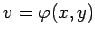

Inhalt Index DeskTop Bronstein

 Funktionen und ihre Darstellung Funktionen von mehreren Veränderlichen Verschiedene ebene Definitionsbereiche Abhängigkeit von Funktionen
Funktionen und ihre Darstellung Funktionen von mehreren Veränderlichen Verschiedene ebene Definitionsbereiche Abhängigkeit von Funktionen


Zwei Funktionen zweier Veränderlicher u=f(x,y) und , die beide in demselben Gebiet definiert sind, werden als abhängige Funktionen bezeichnet, wenn die eine durch die andere gemäß u=F(v) ausgedrückt werden kann. Für jeden Punkt des Definitionsbereiches gilt dann die Identität
 |
(2.273) |
Existiert keine solche Funktion oder spricht man von unabhängigen Funktionen.
| Beispiel |
|
definiert im Gebiet sind abhängige Funktionen, da u=v4 gilt. |